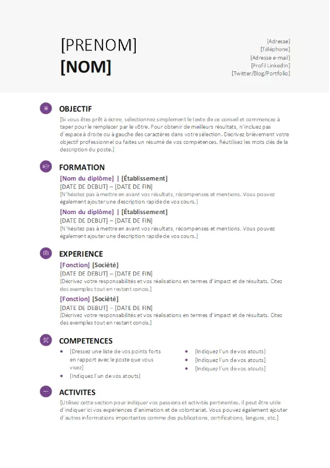

Bienvenue chez TechSolutions, votre partenaire de confiance pour tous vos besoins informatiques. Forts de plus de 10 ans d'expérience dans le secteur, nous offrons une gamme complète de services pour assurer le bon fonctionnement et l'évolution de vos systèmes informatiques.
Nos services incluent :
Chez TechSolutions, nous adoptons une méthode rigoureuse et structurée pour garantir la qualité et l'efficacité de nos services informatiques. Notre approche est conçue pour répondre précisément à vos besoins tout en assurant une transparence totale tout au long du processus. Voici comment nous travaillons :
Nous commençons par une phase d'analyse approfondie pour comprendre vos besoins spécifiques et vos objectifs. Cette étape implique des réunions avec vos équipes pour recueillir des informations essentielles et définir les exigences du projet.
Une fois les besoins identifiés, nous élaborons une solution personnalisée. Cette phase comprend la création de maquettes, la définition des architectures système et la planification des ressources nécessaires. Nous établissons un plan de projet détaillé avec des délais clairs et des jalons importants.
Nos développeurs et ingénieurs mettent en œuvre la solution conformément aux spécifications établies. Nous suivons les meilleures pratiques de développement et utilisons des technologies de pointe pour garantir des performances optimales et une intégration fluide avec vos systèmes existants.
Avant le déploiement final, nous effectuons des tests rigoureux pour s'assurer que la solution répond aux exigences de qualité et de sécurité. Nous testons toutes les fonctionnalités et assurons une validation complète pour identifier et résoudre tout problème potentiel.
Après la validation, nous procédons au déploiement de la solution dans votre environnement de production. Nous offrons également des sessions de formation pour vos équipes afin de garantir une transition en douceur et une adoption efficace de la nouvelle solution.
Notre engagement ne s'arrête pas après le déploiement. Nous fournissons un support continu et une maintenance proactive pour assurer le bon fonctionnement de vos systèmes. Nous restons disponibles pour résoudre tout problème éventuel et effectuer des mises à jour régulières.
Notre méthode de travail est conçue pour offrir des solutions informatiques efficaces et fiables, tout en assurant une communication claire et un suivi constant. Contactez-nous pour en savoir plus sur la façon dont nous pouvons vous aider à atteindre vos objectifs technologiques.
presentation de CV
Pour nous contacter veurillez remplir ci-aspres